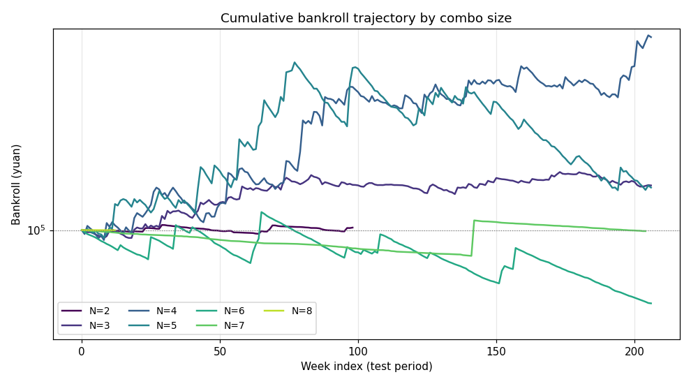
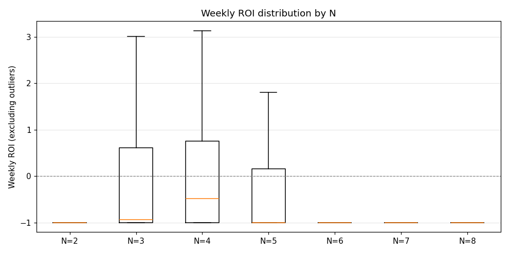
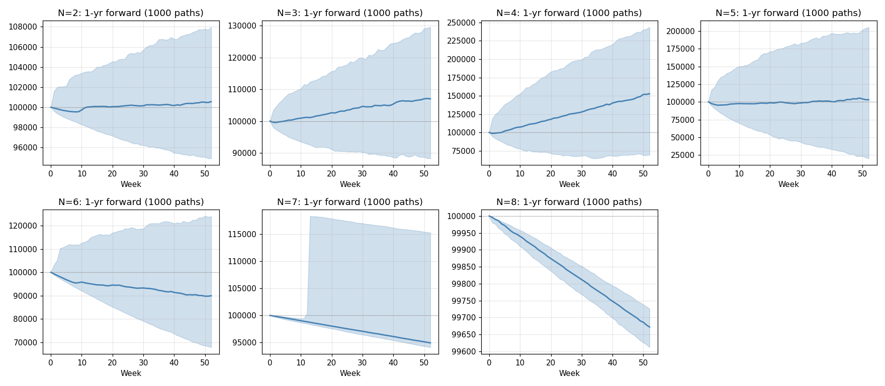

From the 94,395 qualifying single-leg picks generated by 15 OOS-validated niches (train: 期号<median; test: 期号≥median; survival ≡ test mean q > 1.064 with k≥30), we group leg picks by ISO week. For each N ∈ {2..8} and each week with K≥N qualifying picks (one option per match), we enumerate combos when C(K,N)≤5000 else sample 300. Each combo is sized via fractional Kelly (f=0.25·f*) with per-combo cap 0.5% bankroll, weekly stake cap 25% bankroll, then tax-cap split (per-ticket prize<9 999 yuan). PnL recompounds weekly only over the test half. Forward Monte Carlo (1000 paths × 52 weeks) bootstraps weekly PnL.
| N | n_combos | n_hits | hit_rate | predicted | cum ROI | Sharpe | max DD | P5 weekly | weeks→1st hit | P(ROI>0, 1y fwd) |
|---|---|---|---|---|---|---|---|---|---|---|
| 2 | 273 | 14 | 5.128% | 5.363% | 1.5% | -0.19 | -5.0% | -100.0% | 9 | 55.5% |
| 3 | 6,598 | 150 | 2.273% | 2.105% | 29.8% | 0.67 | -10.5% | -100.0% | 1 | 71.9% |
| 4 | 29,725 | 208 | 0.700% | 0.692% | 208.5% | 0.91 | -18.3% | -100.0% | 1 | 83.2% |
| 5 | 54,836 | 103 | 0.188% | 0.212% | 28.2% | 0.33 | -52.6% | -100.0% | 1 | 52.3% |
| 6 | 38,103 | 16 | 0.042% | 0.073% | -34.8% | -0.61 | -41.3% | -100.0% | 14 | 28.0% |
| 7 | 4,704 | 1 | 0.021% | 0.041% | -0.6% | 0.21 | -14.0% | -100.0% | 142 | 22.8% |
| 8 | 17 | 0 | 0.000% | 0.038% | -0.1% | 0.00 | -0.1% | -100.0% | — | 0.0% |

Symlog scale on y-axis. Bankroll initialized at 100 000 yuan. Curves drop to 0 indicate ruin.


| N | P(ROI>0) | P(ROI>20%) | P(DD>-20%) | E[hits/yr] | median ROI | P5–P95 ROI |
|---|---|---|---|---|---|---|
| 2 | 55.5% | 0.0% | 100.0% | 7.5 | 0.6% | [-5.1%, 8.0%] |
| 3 | 71.9% | 15.4% | 97.8% | 37.7 | 7.0% | [-11.7%, 29.5%] |
| 4 | 83.2% | 72.1% | 45.3% | 52.5 | 52.8% | [-30.5%, 143.7%] |
| 5 | 52.3% | 38.5% | 10.5% | 26.0 | 3.0% | [-79.9%, 105.5%] |
| 6 | 28.0% | 6.5% | 54.4% | 4.1 | -10.1% | [-32.2%, 23.9%] |
| 7 | 22.8% | 2.6% | 100.0% | 0.3 | -5.1% | [-5.9%, 15.3%] |
| 8 | 0.0% | 0.0% | 100.0% | 0.0 | -0.3% | [-0.4%, -0.3%] |
| N | avg prize @ 2 yuan | avg prize per ticket (sized) | max prize per ticket | split rate |
|---|---|---|---|---|
| 2 | 39.6 | 1141.0 | 2985.2 | 0.0% |
| 3 | 114.4 | 1658.0 | 9992.9 | 0.1% |
| 4 | 382.9 | 3769.9 | 9998.9 | 7.6% |
| 5 | 1357.3 | 5469.8 | 9999.0 | 25.2% |
| 6 | 4216.1 | 5150.1 | 9998.6 | 38.6% |
| 7 | 7437.2 | 7690.4 | 9999.0 | 97.5% |
| 8 | 8938.4 | 8938.4 | 9876.6 | 100.0% |
Split rate = fraction of combos requiring >1 ticket to keep prize < 10 000 yuan.
| Profile | Optimal N | Sharpe | cum ROI | Max DD | P(ROI>0 in 1y) | Rationale |
|---|---|---|---|---|---|---|
| Conservative | 4 | 0.91 | 208.5% | -18.3% | 83.2% | Highest risk-adjusted return; fastest hit cadence; smallest variance. |
| Aggressive | 4 | 0.91 | 208.5% | -18.3% | 83.2% | Maximum compounding ceiling; tolerate variance for biggest payouts. |